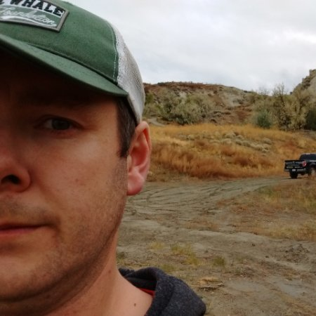

Environmental Consulting
Phone: 250-307-7364
Sage Environmental Consulting Inc. provides environmental consulting and natural resource management solutions to commercial, industrial, public and private sector clientele throughout Western Canada. Sage provides consulting expertise for: environmental assessment and permitting; environmental monitoring and restoration; contaminated sites and land remediation; forestry and wildfire management; and mapping and modelling. Sage is well located to service all regions of British Columbia, the North and Alberta from our headquarters in the Okanagan Valley.
Matthew Davidson - BSc, PAg, AScT, EP (Partner)
Matthew Davidson is an Environmental Scientist with a background in environmental biology, contaminated sites, policy, land services and waste management. With a diverse work history Matthew has worked for clients in various sectors including government, real estate and development, oil and gas, forestry, agriculture, construction, recycling, tourism and waste management industries. Past projects have included; environmental monitoring, environmental impact assessments, agricultural assessments, ecological restoration, environmental site assessments, facility audits, terrestrial and aquatic remediation projects, water quality monitoring program design and implementation, and oil spill response. Matthew's work experience has taken him throughout British Columbia, into Alberta and the Northwest Territories.
Contact Information
Phone: 250-307-7364